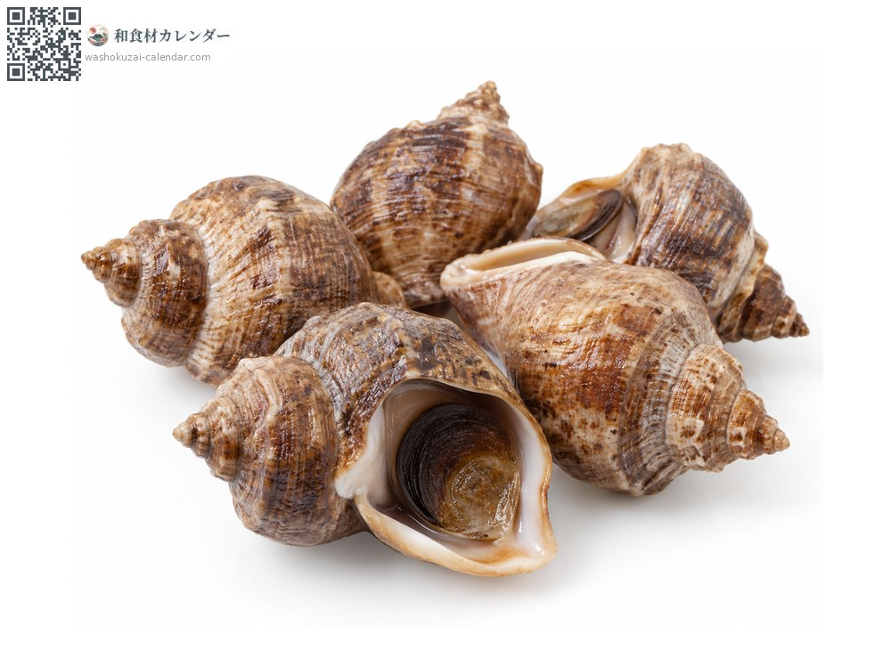
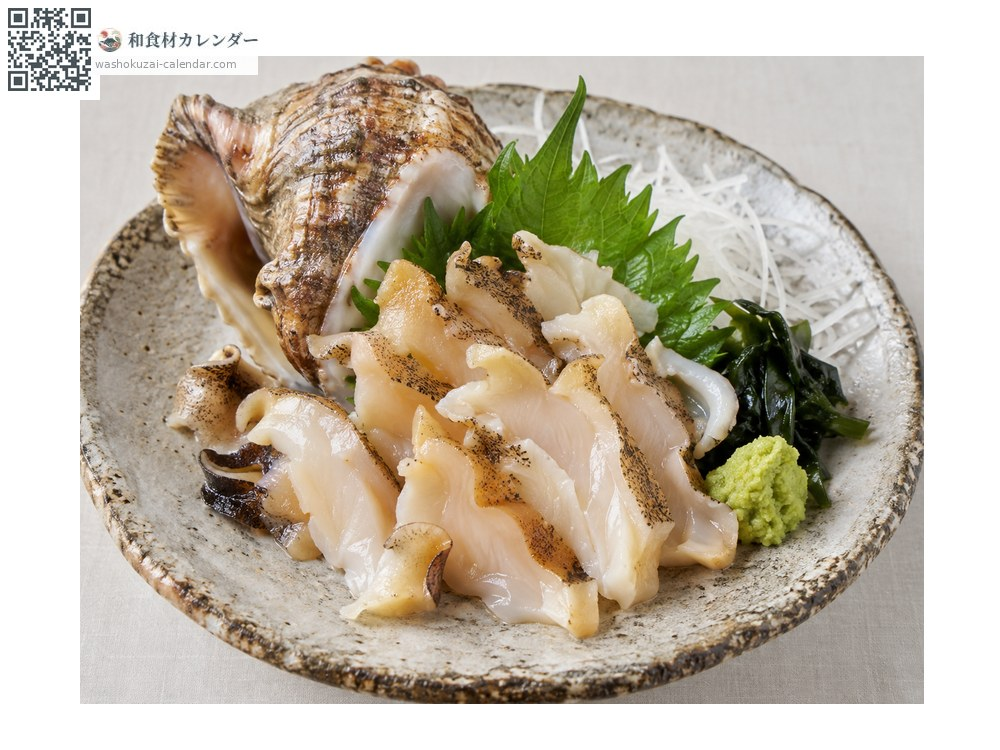
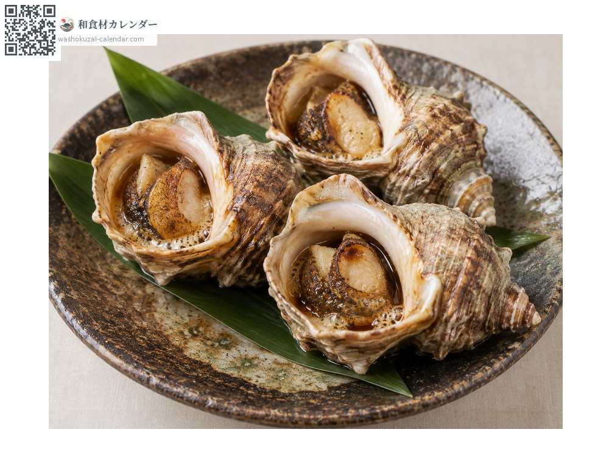
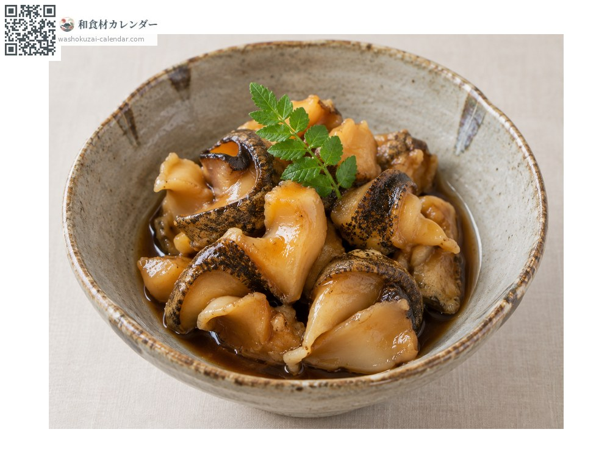
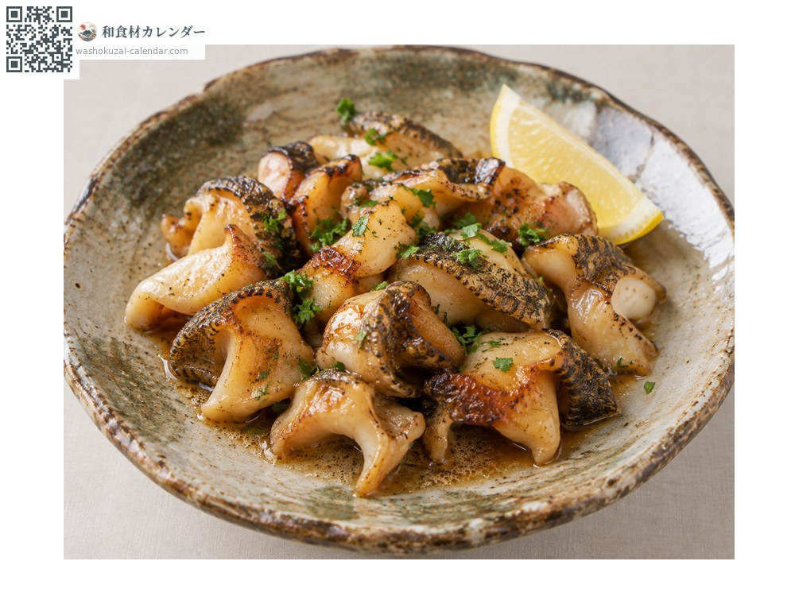

海鲜
螺贝（つぶ贝）
ツブ貝 つぶがい tsubugai
别名tsubugai
应季时期为1月、2月、11月、12月

应季时期
1月
2月
3月
4月
5月
6月
7月
8月
9月
10月
11月
12月
应季有供应
烹饪方法

生鱼片
有独特的爽脆口感，甜味很强。

连壳壶烧
连壳烧烤后滴上酱油，海潮的香气会散发出来。

甜酱油炖煮
甜咸炖煮，肉质会变得柔软。

黄油烧
用黄油煎，西式做法也很合。
挑选方法
壳厚、拿起来有重量感。碰触时会有反应。
保存方法
带壳冷藏。剥好的肉当天或隔天用完。
主要产地
小知识
市场上称为つぶ贝的以真螺（正式名称为虾夷法螺）为代表。唾液腺含有四甲铵这种毒素，烹调时务必去除。北海道是主要产地，个体越大价格越高。